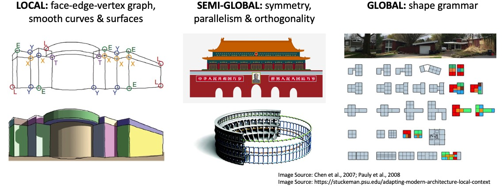

Monday, October 28, 2019 - AM
Location: Room 300, COEX Convention Center, Seoul, Korea

The perception of holistic scene structures, that is, orderly, regular, symmetric, or repetitive patterns and relationships in a scene, plays a critical role in human vision. When walking in a man-made environment, such as office buildings, a human can instantly identify parallel lines, rectangles, cuboids, rotational symmetries, repetitive patterns, and many other types of structure, and exploit them for accurate and robust 3D localization, orientation, and navigation. In computer vision, the use of such holistic structural elements has a long history in 3D modeling of physical environments, especially man-made environments, from data acquired by a variety of sensors such as monocular and binocular vision, LiDAR, and RGB-D sensors. These methods have shown great success and potential in creating high-fidelity 3D models, increasing the accuracy, robustness, and reliability of 3D vision systems, and facilitating modern 3D applications with a high-level, compact, and semantically rich scene representation.
In this context, this tutorial aims at bringing together the current research advances and discussing the state-of-the-art methods in 3D modeling of structured scenes and its applications. The tutorial will review the fundamental theory of multiview geometry of 3D structures; analyze traditional and recent geometric approaches in utilizing holistic 3D structures; present an overview of current confluence of learning-based approaches and geometry-based approaches. Finally we discuss possible future directions in combining reconstruction and recognition for 3D modeling of man-made environments.
8:30 - 9:15 . Theory of holistic 3D reconstruction by Yi Ma
9:15 - 10:15 . Current state of geometric approaches by Zihan Zhou
10:15 - 10:45 . Coffee break
10:45 - 11:45 . Current state of machine learning approaches by Yasutaka Furukawa and Chen Liu
11:45 - 12:30 . Current topics, open questions, datasets by Yasutaka Furukawa and Zihan Zhou